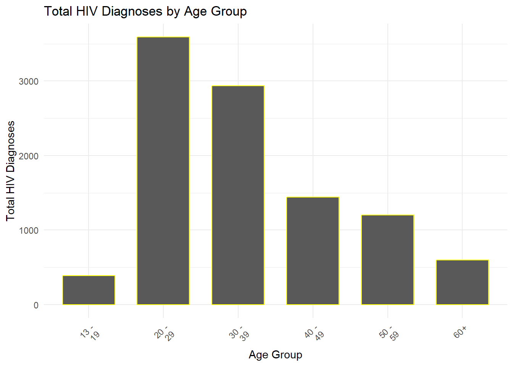

Final Project
New York City HIV/AIDS Report
A HIV Epidemiological report aimed to investigate the correlation between HIV infection and socioeconomic status, population distribution, and medical resources in New York City.

Motivation
HIV/AIDS are still a significant public health challenge,in 2020, there were 100,712 people living with HIV in New York City. The vast population diversity and economic disparities of New York City, provide a unique landscape for studying how socioeconomic status, population distribution, and medical resources intersect to influence HIV infection rates within the in a dense urban environment city. The medical resource and economic status distribution often varies greatly across different boroughs and neighborhoods in nyc.Investigating how these disparities relate to HIV prevalence can shed light on the broader implications of socioeconomic on epidemiology and develop more targeted intervention strategies base on the different demographics condition.
Screencast
Collaborators
- Jake W. Coldiron(jwc2177)
- Zixuan Qiu(qiu2227)
- Tianyuan Deng(td2809)
- Aung Nay Win(anw2158)
- Yuqi Cheng(yc4382)
Data
To prepare the data analysis, we load these following libraries:
tidyverservesthttrplotlyggplot2leafletcaret
library(tidyverse)
library(rvest)
library(httr)
library(plotly)
library(ggplot2)
library(leaflet)
library(caret)Data processing
The datasets used in this study were sourced from the NYC OpenData
portal, a public platform offering diverse datasets from New York City
agencies. We utilized the R programming language, employing the
httr package to perform HTTP GET requests for retrieving
the data. Specifically, two datasets, nyc_HIV1 and
nyc_HIV2, were accessed from distinct URLs with set record
limits of 10,000 and 22,000 respectively. These datasets, containing
information on HIV statistics, were parsed and filtered to include data
from the year 2017 onwards. Additionally, a dataset for HIV service
resources, HIV_service, was similarly obtained with a
record limit of 1,000. This dataset was processed to select critical
columns like facility information and geographical coordinates. This
process ensured a comprehensive and tailored extraction of data
pertinent to our analysis of HIV trends and resources in New York
City.
We input the New York HIV data from NYC opendata
nyc_HIV1=
GET("https://data.cityofnewyork.us/resource/ykvb-493p.csv",
query = list("$limit" = 10000)) |>
content("parsed")|>
filter(year >= 2017)
nyc_HIV2=
GET("https://data.cityofnewyork.us/resource/dxnu-p2qd.csv",
query = list("$limit" = 22000)) |>
content("parsed")|>
filter(year >= 2017)And input HIV service resource data
HIV_service=
GET("https://data.cityofnewyork.us/resource/pwts-g83w.csv",
query = list("$limit" = 1000)) |>
content("parsed")|>
select(unique_id,facilityname,service_type, address,borough,state,zipcode,latitude,longitude)Calculate the sum, mean, median, standard deviation of HIV/AIDS indicators
colnames(nyc_HIV1)## [1] "year" "borough"
## [3] "neighborhood" "sex"
## [5] "race" "hiv_diagnoses_num"
## [7] "hiv_diagnoses_num_per_100k" "hiv_aids_concurrent_num"
## [9] "concurrent_hiv_aids_among_all" "aids_diagnoses_num"
## [11] "aids_diagnoses_num_per_100k"colnames(nyc_HIV2)## [1] "year" "neighborhood"
## [3] "race" "age"
## [5] "hiv_diagnoses_num" "hiv_diagnoses_num_per_100k"
## [7] "hiv_aids_concurrent_num" "concurrent_hiv_aids_among_all"
## [9] "aids_diagnoses_num" "aids_diagnoses_num_per_100k"
## [11] "borough"colnames(HIV_service)## [1] "unique_id" "facilityname" "service_type" "address" "borough"
## [6] "state" "zipcode" "latitude" "longitude"Varialbes in the nyc_HIV1 and nyc_HIV2 Dataset
year: The year of data recording.borough: The borough in New York City.neighbourhood: The specific neighbourhood.sex: Gender of individuals.race: Racial category.age: Age of individuals.hiv_diagnoses_num: The number of new HIV diagnoses.hiv_diagnoses_num_per_100k: The rate of new HIV diagnoses per 100,000 population.hiv_aids_concurrent_num: The number of people diagnosed with both HIV and AIDS concurrently.concurrent_hiv_aids_among_all: The proportion of HIV diagnoses that are concurrent with an AIDS diagnosis.aids_diagnoses_num: The number of new AIDS diagnoses.aids_diagnoses_num_per_100k: The rate of new AIDS diagnoses per 100,000 population.
Variables in the HIV_service datasets
unique_id: Identifier for the service resource.facilityname: Name of the facility offering HIV services.service_type: Type of service provided.address,borough,state,zipcode: Address details of the facility.latitude,longitude: Geographical coordinates.
Visualizations
Number of HIV/AIDS diagnoses by race, sex, and age group.
Female <- nyc_HIV1 |>
filter(sex == "Female" & borough == "All" & race !="All")
Male <- nyc_HIV1 |>
filter(sex == "Male" & borough == "All" & race !="All")
graph1 = bind_rows(Female, Male)
nyc_HIV1$hiv_diagnoses_num <- as.integer(nyc_HIV1$hiv_diagnoses_num)
nyc_HIV2$hiv_diagnoses_num <- as.integer(nyc_HIV2$hiv_diagnoses_num)
age_summary <- nyc_HIV2 |>
filter(age != "All" & race == "All" & borough == "All") |>
group_by(age) |>
summarise(total_hiv_diagnoses = sum(hiv_diagnoses_num))
# Graph Age
ggplot(age_summary, aes(x = age, y = total_hiv_diagnoses)) +
geom_bar(stat = "identity", color = "yellow", width = 0.7) +
labs(title = "Total HIV Diagnoses by Age Group",
x = "Age Group",
y = "Total HIV Diagnoses") +
theme_minimal() +
theme(axis.text.x = element_text(angle = 45, hjust = 1))
invisible({ggplot(graph1, aes(x=race, y=hiv_diagnoses_num, fill=sex)) +
geom_bar(stat="identity", position=position_dodge()) +
theme(axis.text.x = element_text(angle = 45, hjust = 1)) +
labs(x = "Race", y = "Number of HIV/AIDS Diagnoses", fill = "Sex")})
Female <- nyc_HIV1 |>
filter(sex == "Female" & borough == "All" & race !="All")
Male <- nyc_HIV1 |>
filter(sex == "Male" & borough == "All" & race !="All")
graph1 = bind_rows(Female, Male)
ggplot(graph1, aes(x=race, y=hiv_diagnoses_num, fill=sex)) +
geom_bar(stat="identity", position=position_dodge()) +
theme(axis.text.x = element_text(angle = 45, hjust = 1)) +
labs(x = "Race", y = "Number of HIV/AIDS Diagnoses", fill = "Sex")
All <- nyc_HIV1 %>%
filter(sex == "All" & race == "All" & borough == "All")summary: Both the nyc_HIV1 dataset and the nyc_HIV1 data have 11 variables, nyc_HIV1 is the data related to the number of patients with HIV by gender and nyc_HIV2 is the data related to the number of patients with HIV by age. When analyzing the number of HIV patients by race, the results show that Latino/Hispanic races are used for high prevalence and there are more males than females. When analyzing the number of HIV patients by age group, the results showed that 20-29 year olds had the highest number of total diagnoses and 13-19 year olds had the lowest number of diagnoses.
The map of NYC HIV service resources location.
if (!require(leaflet)) install.packages('leaflet')
library(leaflet)
filtered_data = HIV_service[HIV_service$longitude != 0 & HIV_service$latitude != 0,]
leaflet(filtered_data) %>%
addProviderTiles(providers$OpenStreetMap) %>%
addCircleMarkers(
~longitude, ~latitude,
radius = 4,
popup = ~paste("<strong>Facility Name:</strong>", facilityname,
"<br><strong>Service Type:</strong>", service_type,
"<br><strong>Address:</strong>", address,
"<br><strong>Borough:</strong>", borough,
"<br><strong>Zip:</strong>", zipcode)
)summary: Here, an interactive map was created using the leaflet package to visualize the distribution of HIV service facilities and detailed information to help better understand the allocation of resources for HIV prevention and treatment.
Distribution of the HIV/AIDS diagnoses by neighborhood.
#work
# I'll see if I can find the log&lat for the neighborhoods
diagnoses <- nyc_HIV1 %>%
select(borough, hiv_diagnoses_num)
# Plot bar chart
ggplot(diagnoses, aes(x = reorder(borough, hiv_diagnoses_num), y = hiv_diagnoses_num)) +
geom_col() +
labs(x = "Neighborhood",
y = "Number of HIV Diagnoses",
title = "HIV Diagnoses by Neighborhood") +
coord_flip()
summary: The number of HIV cases varies by community, with the Staten Island community having a much smaller number of confirmed cases, the Brooklyn community having a larger number of confirmed cases, and the other communities having a similar number of cases.
Trend analysis:analyze the trend of the number of HIV/AIDS diagnoses over time.
All <- nyc_HIV1 %>%
filter(sex == "All" & race == "All" & borough == "All")
# Plot diagnoses over time
ggplot(All, aes(x = year, y = hiv_diagnoses_num)) +
geom_point() +
geom_smooth(method = "lm", se = FALSE) +
labs(
title = "HIV Diagnoses Trend (All Sex)",
x = "Year",
y = "Number of Diagnoses"
)## `geom_smooth()` using formula = 'y ~ x'
summary: The number of patients diagnosed in different years showed significant differences. The overall trend is decreasing from year to year. This also reflects the growing importance that has been placed on HIV.
Exploratory statistical analyses
Correlation analysis:After the Visualizations is there any association between different variables such as neighborhood, age, gender, and race.
T-test for HPV prevalence in gender-specific populations.
nyc_HIV1$hiv_diagnoses_num <- as.numeric(nyc_HIV1$hiv_diagnoses_num)
# Extracting data for females and males
female_data <- na.omit(nyc_HIV1[nyc_HIV1$sex == "Female",]$hiv_diagnoses_num)
male_data <- na.omit(nyc_HIV1[nyc_HIV1$sex == "Male",]$hiv_diagnoses_num)
# Perform T-test
t.test(female_data, male_data)##
## Welch Two Sample t-test
##
## data: female_data and male_data
## t = -8.183, df = 1921.9, p-value = 4.982e-16
## alternative hypothesis: true difference in means is not equal to 0
## 95 percent confidence interval:
## -25.78465 -15.81460
## sample estimates:
## mean of x mean of y
## 6.138889 26.938515summary: The t-test passed the test of significance indicating that there was a significant difference in the number of males and females with HIV.
Test whether hiv_diagnoses_num is significantly different across ethnicities.
anova1 <- anova(lm(hiv_diagnoses_num ~ race, data = nyc_HIV1))
print(anova1)## Analysis of Variance Table
##
## Response: hiv_diagnoses_num
## Df Sum Sq Mean Sq F value Pr(>F)
## race 5 2587921 517584 59.623 < 2.2e-16 ***
## Residuals 5173 44906405 8681
## ---
## Signif. codes: 0 '***' 0.001 '**' 0.01 '*' 0.05 '.' 0.1 ' ' 1summary: The ANOVA passed the test of significance, indicating that there is indeed a significant difference in the number of people of different races who have HIV.
Test whether hiv_diagnoses_num is significantly different between age groups.
anova2 <- anova(lm(hiv_diagnoses_num ~ age, data = nyc_HIV2))
print(anova2)## Analysis of Variance Table
##
## Response: hiv_diagnoses_num
## Df Sum Sq Mean Sq F value Pr(>F)
## age 6 2603171 433862 178.22 < 2.2e-16 ***
## Residuals 10569 25729234 2434
## ---
## Signif. codes: 0 '***' 0.001 '**' 0.01 '*' 0.05 '.' 0.1 ' ' 1summary: The ANOVA passed the test of significance indicating that there is a significant difference in the number of HIV in different age groups.
Test whether there is a significant difference between people of different races and different age groups.
race_table <- table(nyc_HIV1$race, nyc_HIV1$sex)
race_table##
## All Female Male
## All 288 288 288
## Asian/Pacific\nIslander 288 288 288
## Black 288 288 288
## Latino/Hispanic 288 288 288
## Other/Unknown 288 288 288
## White 288 288 288# Perform chi-square test
chisq.test(race_table)##
## Pearson's Chi-squared test
##
## data: race_table
## X-squared = 0, df = 10, p-value = 1summary: The chi-square test passes the test of significance, indicating that there is a significant relationship between race and gender.
Linear regression analysis
# Defining a Unique Thermal Coding Processor
library(caret)
encoder <- dummyVars(~ borough + sex + race, data = nyc_HIV1)
# Solo thermal coding of data
encoded_data <- predict(encoder, newdata = nyc_HIV1)
# Merging the coded and original data sets
nyc_HIV3 <- cbind(nyc_HIV1, encoded_data)
nyc_HIV4<-nyc_HIV3[,-c(2,3,4,5,7,8,9,10,11,12,18,21)]
model <- lm(hiv_diagnoses_num ~. , data = nyc_HIV4)
summary(model)##
## Call:
## lm(formula = hiv_diagnoses_num ~ ., data = nyc_HIV4)
##
## Residuals:
## Min 1Q Median 3Q Max
## -354.01 -15.87 -3.06 10.01 1637.59
##
## Coefficients:
## Estimate Std. Error t value Pr(>|t|)
## (Intercept) 4514.4981 1597.6302 2.826 0.00474 **
## year -2.0224 0.7912 -2.556 0.01062 *
## boroughBronx -354.5277 7.8099 -45.395 < 2e-16 ***
## boroughBrooklyn -358.4969 7.6619 -46.789 < 2e-16 ***
## boroughManhattan -362.8923 7.6887 -47.198 < 2e-16 ***
## boroughQueens -363.2155 7.6887 -47.240 < 2e-16 ***
## `boroughStaten\\nIsland` -373.2117 8.0652 -46.274 < 2e-16 ***
## sexFemale -26.8822 2.6030 -10.327 < 2e-16 ***
## sexMale -6.1453 2.6045 -2.359 0.01834 *
## `raceAsian/Pacific\\nIslander` -62.6910 3.6817 -17.028 < 2e-16 ***
## raceBlack -36.4375 3.6807 -9.900 < 2e-16 ***
## `raceLatino/Hispanic` -41.7176 3.6807 -11.334 < 2e-16 ***
## `raceOther/Unknown` -65.3393 3.6850 -17.731 < 2e-16 ***
## raceWhite -57.9514 3.6807 -15.745 < 2e-16 ***
## ---
## Signif. codes: 0 '***' 0.001 '**' 0.01 '*' 0.05 '.' 0.1 ' ' 1
##
## Residual standard error: 76.5 on 5165 degrees of freedom
## (5 observations deleted due to missingness)
## Multiple R-squared: 0.3635, Adjusted R-squared: 0.3619
## F-statistic: 226.9 on 13 and 5165 DF, p-value: < 2.2e-16summary: The coefficients of all variables passed the significance test, indicating that all of these independent variables have a significant effect on hiv_diagnoses_num. The coefficient before the variable boroughStaten\ has the largest absolute value, which means that it has the largest effect on the number of HIV patients. In addition, the coefficients before these variables are all negative, indicating that they all negatively affect hiv_diagnoses_num.Finally, the multiple linear regression model constructed ishiv_diagnoses_num=4514.4981-2.0224year-354.5227boroughBronx-358.4969boroughBrooklyn-362.8923boroughManhattan-363.2155boroughQueens-373.2117boroughStaten\nIsland-26.8822sexFemale-6.1453sexMale-62.6910raceAsian /Pacific\nIslander-36.4375raceBlack-41.7176raceLatino/Hispanic-65.3393raceOther/Unknown-57.9514*raceWhite.
Regression model test
#Drawing demonstration
par(mfrow=c(2, 2))
plot(model)
# Plot of predicted values against residuals
residuals <- resid(model)
fitted_values <- predict(model)
plot(fitted_values, residuals,
xlab = "Fitted values",
ylab = "Residuals",
main = "Residuals vs. Fitted")
abline(h = 0, col = "red")
summary:Here is a test of the effectiveness of the regression model constructed above. Use plot(model) to draw residual plots, scatter plots and other diagnostic plots. Residual plots are used to check for linear properties, heteroskedasticity, outliers, etc. Scatter plots can be used to check for correlation between independent variables, and QQ plots are used to check whether the residuals conform to the assumption of normal distribution. Here, we can see that the residuals do not conform well to normality and randomness. Analyzing the reason, it may be due to the existence of individual outliers, which affects the distribution of the data and the distribution of the residuals, making them not conform to normality and randomness.
if github md knit fail,change to the html output
Results
Gender Differences in HIV Prevalence
A Welch Two Sample t-test was conducted to compare the prevalence of HIV diagnoses between female and male populations. The analysis revealed a statistically significant difference in the number of HIV diagnoses between females (\(\bar{x} = 6.14\)) and males (\(\bar{x} = 26.94\)), \(t(1921.9) = -8.183\), \(p < .00001\). The 95% confidence interval for the difference in means ranged from -25.78 to -15.81, indicating a higher prevalence of HIV diagnoses in males compared to females.
HIV Diagnoses Across Ethnicities
An Analysis of Variance (ANOVA) was performed to examine whether the number of HIV diagnoses significantly differed across various ethnic groups. The results indicated a significant effect of race on the number of HIV diagnoses, \(F(5, 5173) = 59.623\), \(p < .00001\). This finding suggests substantial disparities in HIV diagnoses among different racial groups.
HIV Prevalence Among Different Age Groups
Further, an ANOVA was conducted to assess the impact of age on HIV diagnoses. The analysis showed a significant difference in the number of HIV diagnoses among different age groups, \(F(6, 10569) = 178.22\), \(p < .00001\). This result highlights the varying prevalence of HIV across age demographics.
These findings collectively offer valuable insights into the epidemiological patterns of HIV diagnoses in New York City, highlighting significant disparities based on gender, race, and age. Such disparities underscore the need for targeted public health interventions and policies to address the unique needs of these demographic groups.
Discussion
Findings from the Analysis
- Gender and HIV Prevalence: There tends to be a difference in HIV infection rates and diagnosis numbers between males and females.In the analysis we conducted, it was found that the number of HIV diagnoses was significantly higher in males compared to females.
- Ethnic Disparities in HIV Diagnoses: Our ANOVA tests revealed significant differences in HIV diagnoses among different races and age groups,emphasizing the persistence of inequities in HIV prevalence.
- Variation Across Boroughs: The linear regression analysis showed significant differences in HIV diagnoses among the boroughs of New York City. Boroughs like Staten Island exhibited the largest negative coefficients in the model, indicating a lower number of HIV diagnoses compared to other regions. The differences are possibly influenced by factors such as local public health policies, access to healthcare services, and community-level prevention efforts.
- Trends in HIV Infections: Our analysis indicated an 31% decrease in new HIV infections from 2017 to 2021, suggesting a gradual but steady progress in controlling new infections.
Insights and Reflections
Our findings provide critical insights into the multifaceted nature of HIV epidemiology in New York City. The results underscore the necessity of addressing social and structural factors, such as racism, sexism, economic factors, homophobia, and transphobia. These determinants can influence risk behaviors, access to healthcare, and overall health outcomes.
While some findings, such as the disparities in HIV diagnoses among different demographics, were expected, the impact of external factors like the COVID-19 pandemic on the patterns of HIV diagnoses was particularly intriguing. It highlights the dynamic nature of public health challenges and the need for adaptive and resilient healthcare systems.
The insights gained from this analysis can aid in the development of more nuanced and effective public health strategies. These strategies should not only be responsive to the unique needs of different demographics but also adaptable to the specific challenges faced by each borough and race. By addressing these multifaceted aspects, New York City can continue to make progress towards reducing HIV infections and improving outcomes for people living with HIV.